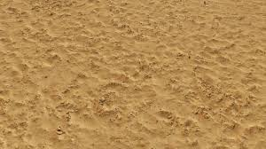
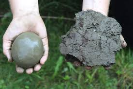
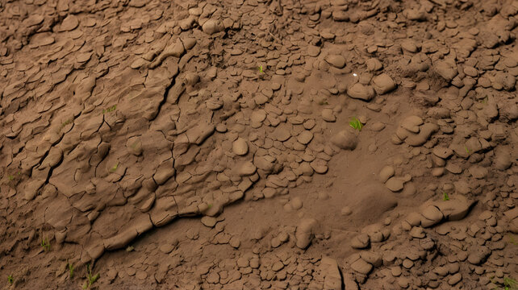
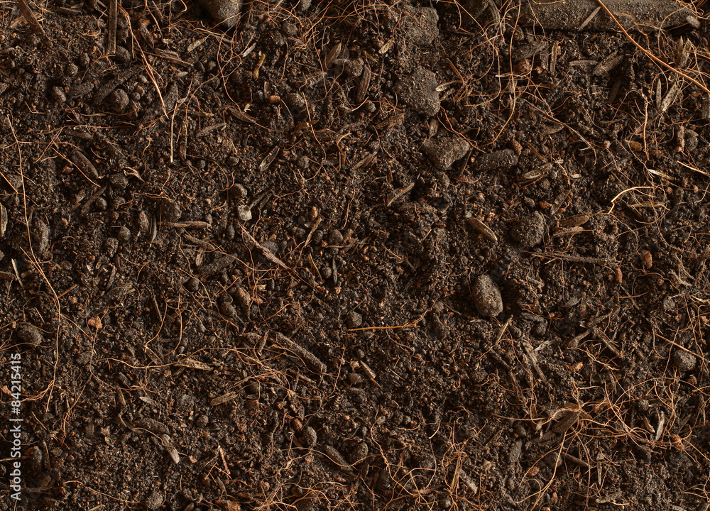

Loam Soil

Overview: Loam soil is a balanced mixture of sand, silt, and clay, making it highly suitable for most plants. It has a smooth, crumbly texture, good drainage, and fertility, making it easy to work with in various types of gardening and agriculture.
Uses: Loam soil supports a diverse range of plants including vegetables, flowers, and grains. It is ideal for fruit-bearing trees and perennial plants because it retains moisture and nutrients well. Loam is commonly used for vegetable gardens, lawns, and flower beds, providing an ideal balance of drainage and retention.
Loam soil is favored in agricultural fields for growing high-demand crops like tomatoes, maize, and wheat. Due to its fertility, it is also widely used in horticulture and landscaping. It can support legumes, root crops, and is well-suited for organic farming practices.
Prevention Methods:
- Prevent erosion with cover crops and mulch to maintain structure.
- Enhance drainage by adding compost or aged manure regularly.
- Control irrigation to avoid waterlogging and nutrient leaching.
- Use crop rotation to avoid nutrient depletion and manage pests.
- Add organic matter such as peat or well-rotted manure to improve fertility over time.
- Minimize soil compaction by using raised beds or mulching pathways.
Sand Soil

Overview: Sand soil has coarse particles that provide excellent drainage but low nutrient retention. It is commonly found in arid regions and warms up and dries out quickly due to its large particles and minimal water-holding capacity.
Uses: Sand soil is ideal for growing root vegetables like carrots, potatoes, and onions because its loose structure allows roots to grow without obstruction. It is also beneficial for certain herbs and Mediterranean plants that thrive in drier conditions.
Beyond gardening, sand soil is widely used in landscaping, especially in areas that require fast drainage. It also serves as a base material for construction projects such as concrete mixing, road foundations, and as a filling material due to its stability. Sand soil is preferred in desert or xeriscaping gardens due to its low moisture retention, suiting drought-tolerant plants.
Prevention Methods: Improve water retention by adding organic matter like compost or peat moss. Frequent, light watering can help plants establish in sandy soil, and using mulches reduces water evaporation. Add clay or loam to increase soil fertility and structure over time. Regularly replenish organic nutrients to compensate for natural leaching.
Clay Soil

Overview: Clay soil consists of very fine particles that retain water and nutrients well but have poor drainage, often resulting in compact, heavy soil. It is commonly found in areas with high rainfall and is prone to waterlogging and slow warming.
Uses: Clay soil supports moisture-loving crops such as rice and wheat. In construction, it is valuable for its stability and is used in making bricks and pottery. It is suitable for plants like ferns, hostas, and hydrangeas, which require steady moisture.
Because clay soil is nutrient-rich, it is suitable for planting dense root crops, grasses, and leafy greens. However, it must be managed carefully in gardens to prevent waterlogging. It is also found in wetlands, where it plays a role in natural water retention and flood control.
Prevention Methods: Improve drainage by mixing in organic matter such as compost and sand. Regular aeration is crucial to prevent soil from compacting, and using raised beds can help improve drainage. Monitor watering practices to avoid excessive moisture buildup.
Silt Soil

Overview: Silt soil is smooth and retains moisture well. It is typically found near rivers and lakes where it receives nutrient-rich sediments, providing a balance of moisture retention and drainage.
Uses: Silt soil is highly suitable for growing grains, leafy vegetables, and flowering plants that benefit from moderate moisture. Its fine particles help retain moisture, making it ideal for wetland areas. Silt also supports root vegetables and provides nutrients for dense foliage growth.
Due to its moisture-retentive nature, silt soil is used in water conservation efforts and as a natural filter for water purification. Farmers in floodplains often rely on silt soil for producing high-yield crops.
Prevention Methods: To prevent compaction, limit heavy traffic on silt soil areas, and frequently aerate to maintain soil structure. Cover crops help to minimize erosion, while regular mulching can improve moisture retention and reduce water evaporation. Add organic matter to boost soil stability and fertility.
Peat Soil

Overview: Peat soil is rich in organic matter and is slightly acidic, retaining moisture exceptionally well. It is often found in boggy or marshy areas and can support a range of acid-loving plants.
Uses: Peat soil is excellent for acid-loving plants like blueberries, azaleas, and heathers. Its high water retention is beneficial for potted plants, and it is often used as a soil amendment to improve soil moisture. Peat also provides carbon-rich material for composting and landscaping projects.
In gardening, peat is used for plants requiring high acidity. Additionally, peat is a major component in greenhouse soils and is popular for improving soil structure. Its high organic content makes it valuable for creating nutrient-rich compost and enhancing biodiversity in certain ecosystems.
Prevention Methods: To reduce acidity, add lime or other alkaline materials. Peat soil requires proper drainage to prevent root rot, so it should be mixed with sand or loam for balance. Avoid overwatering, especially with potted plants, and use only for plants that can tolerate its unique characteristics.